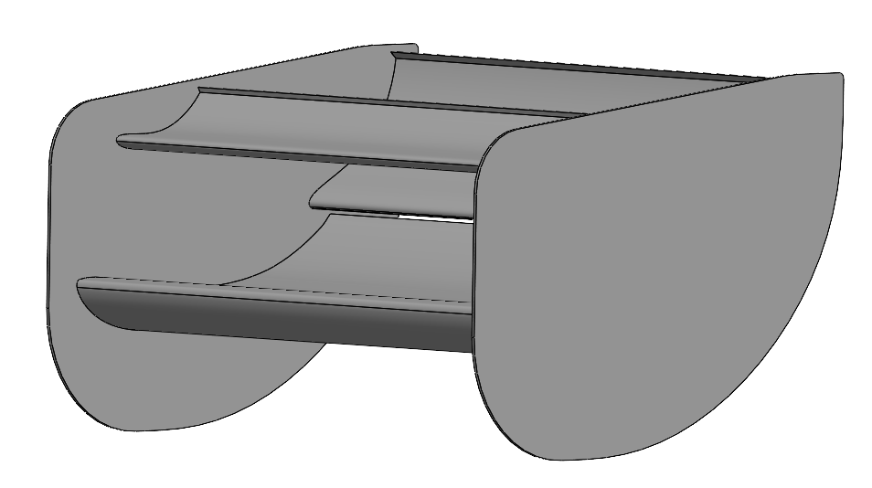
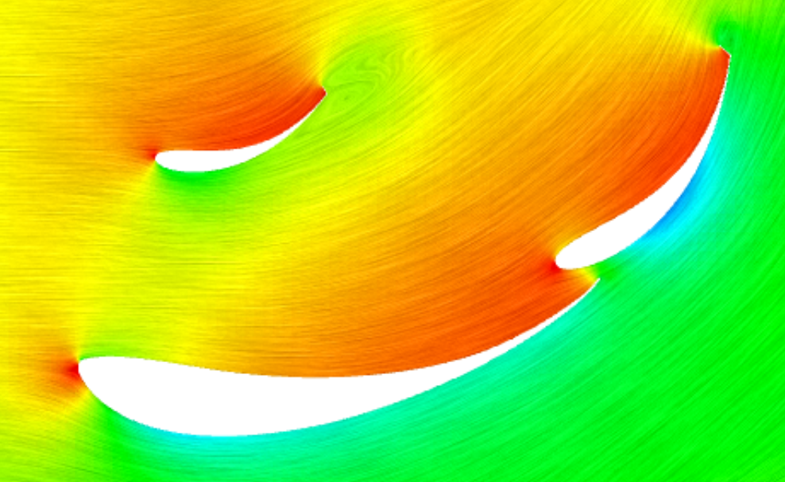

Formula SAE Rear Wing 3rd Element
Hytech Racing (FSAE EV)



Overview
- Evaluate if adding a 3rd aerodynamic element to the rear wing was a feasible way to improve track performance
- Balance downforce with drag, structural complexity, geometric constraints, and manufacturability
- The existing rear wing consisted of 2 elements and generated ~31% of the car's total downforce
Key Results
- 70+ CFD iterations with CATIA 3DX and Ansys Fluent
- Tested variations in airfoil profile, AoA, positioning, and wing geometry
- Achieved a ~0.1 increase in simulated -CL
- Conclusion: Performance gain too small
My Role
Analysis & Modeling
- Created multiple 3-element wing concepts in CATIA 3DX, considering packaging and geometric constraints
- Defined variations across variables like airfoil profiles and positioning
CFD Simulation
- Simulated aerodynamic performance using Ansys Fluent and GT's PACE HPC
- Studied multi-wing interactions by iterating through multiple angles of attack (AoA) and configurations
- Evaluated pressure distributions, wake behavior, and inter-element flow interference
Design Evaluation
- Explored advanced geometries such as lofted wings and gurneys
- Compared simulated -CL and Cd values for each design
- Ensured compliance with competition regulations and kept in mind team drag coefficient targets
Outcome
- Analyzed performance gains relative to added weight, manufacturing complexity, integration
- Concluded that a 3rd element was not feasible due to a negligible performance improvement, mass gain, and manufacturing complexity
Skills
CATIA 3DX
Ansys Fluent
CFD
Aerodynamic Design
DFM
Iteration & Optimization
Engineering Tradeoffs